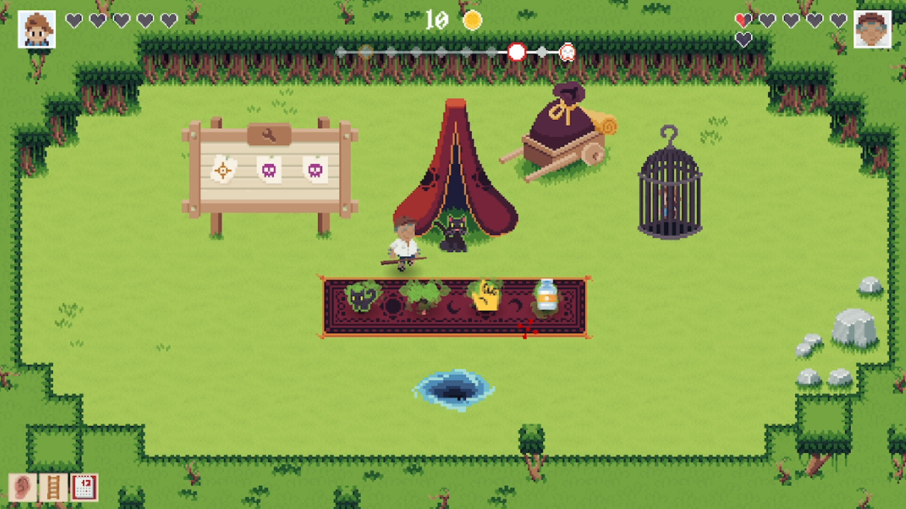
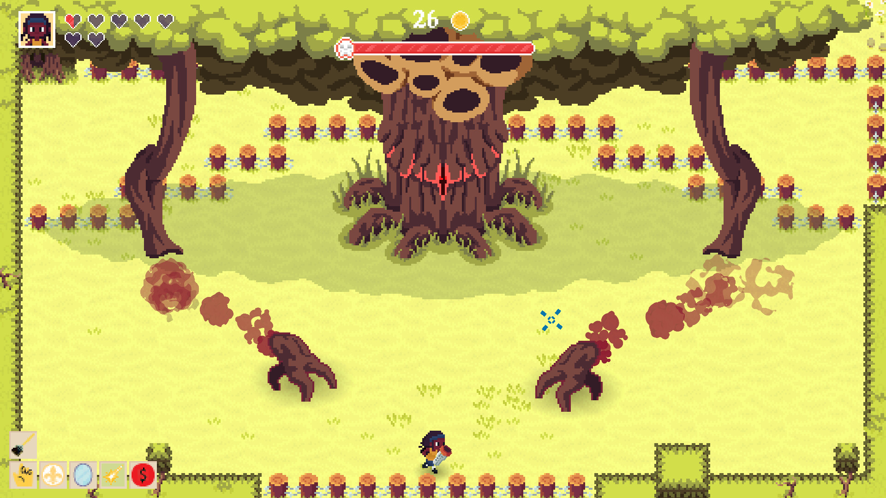
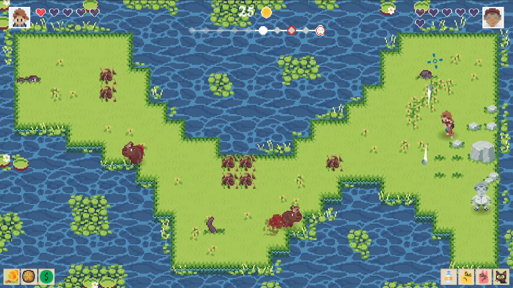
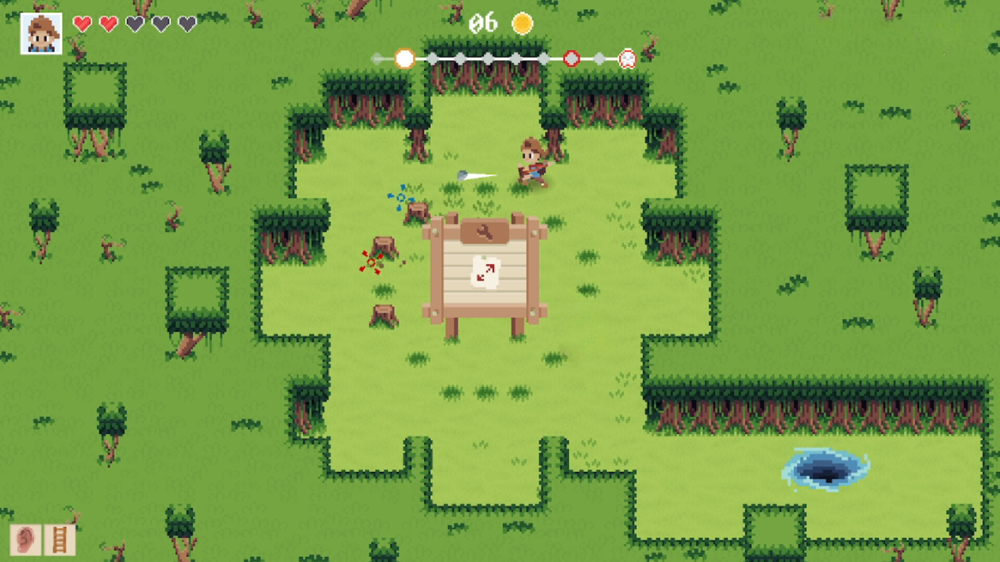
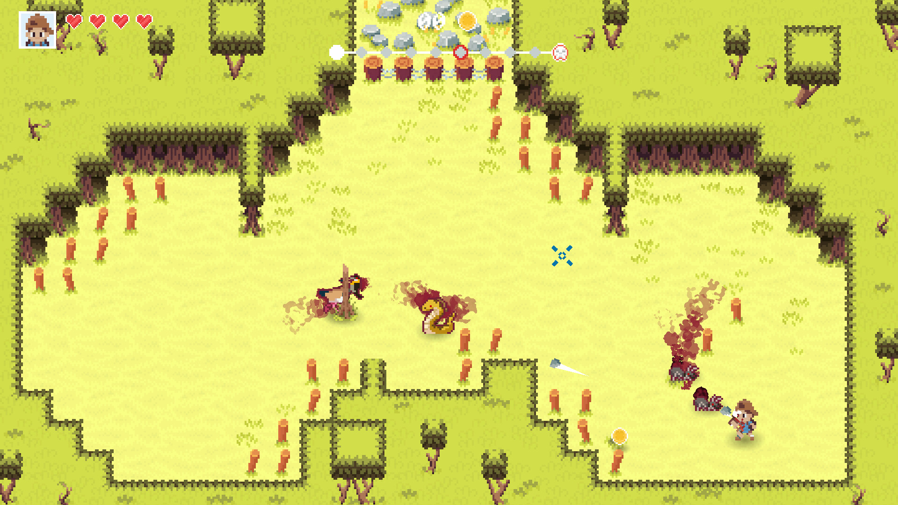
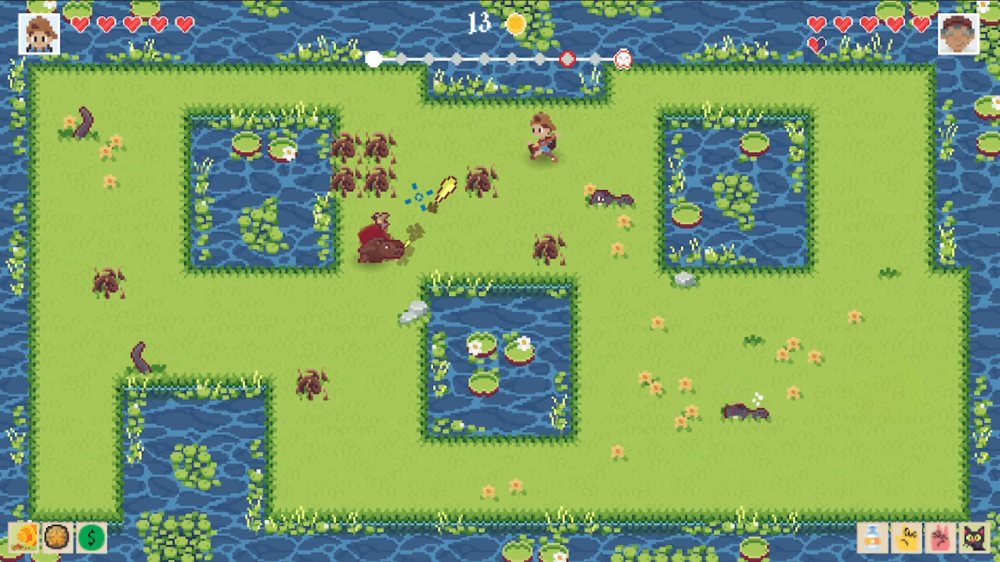
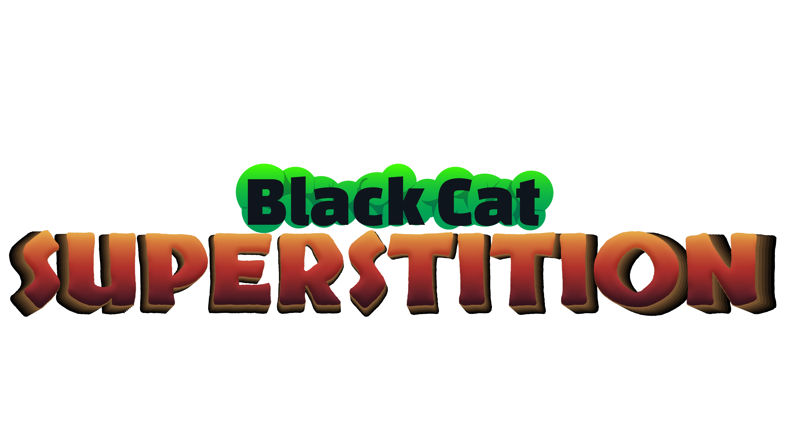

Factsheet
- Developer: LUDO Thinking
- Based in: Brazil
- Release date: 2026
- Platforms: PC (Steam)
- Website: Superstition Black Cat (Steam)
- Press contact: renata@ludothinking.com
- Social Media:
Description
A roguelite where superstitions take shape as items! Face enemies, collect drops with negative effects that can be traded for advantages. Explore ever-changing rooms filled with challenges inspired by beliefs that make us think twice before taking a risk.
Features
- 🇧🇷 Dive into Brazilian Folklore: – Discover some of Brazil's coolest superstitions as you face challenging enemies.
- 🎲 A Unique Roguelite Experience – Every run is a different experience! Collect items inspired by Brazilian superstitions and beliefs. Discover items that can be traded and stacked, creating a new experience with every journey.
- 🐈⬛ Supernatural Artifacts – Collect powerful items, but be careful! They come with curses that can only be lifted by striking a bargain with the black cat!
- 🎮 Local Co-op – Bring a friend along to face the unknown by your side. Together, you can challenge bad luck and have a blast!
- ♾️ Endless Replayability – With randomly generated rooms, enemies, and events, no two runs are ever the same. A new challenge awaits you every time you play!
Images






Logos e Icons

Access the full press kit below:
Videos
🎬 Official trailer